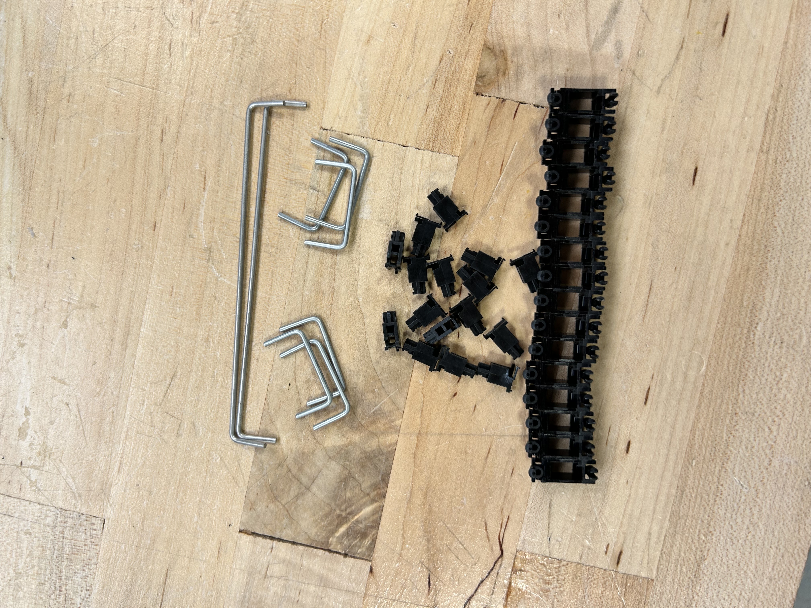
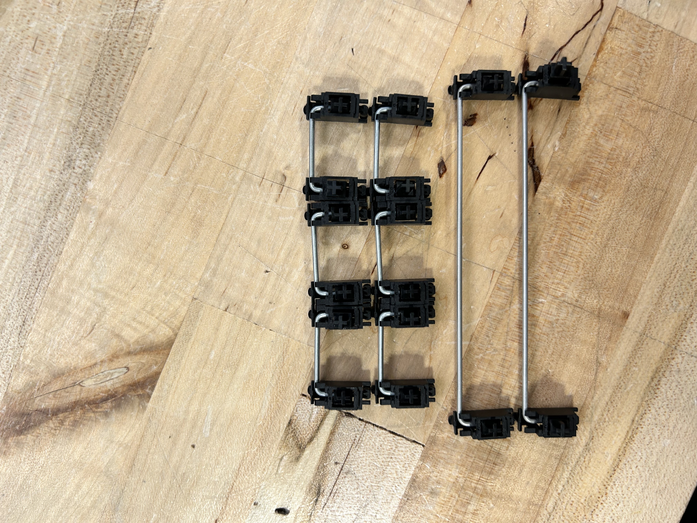
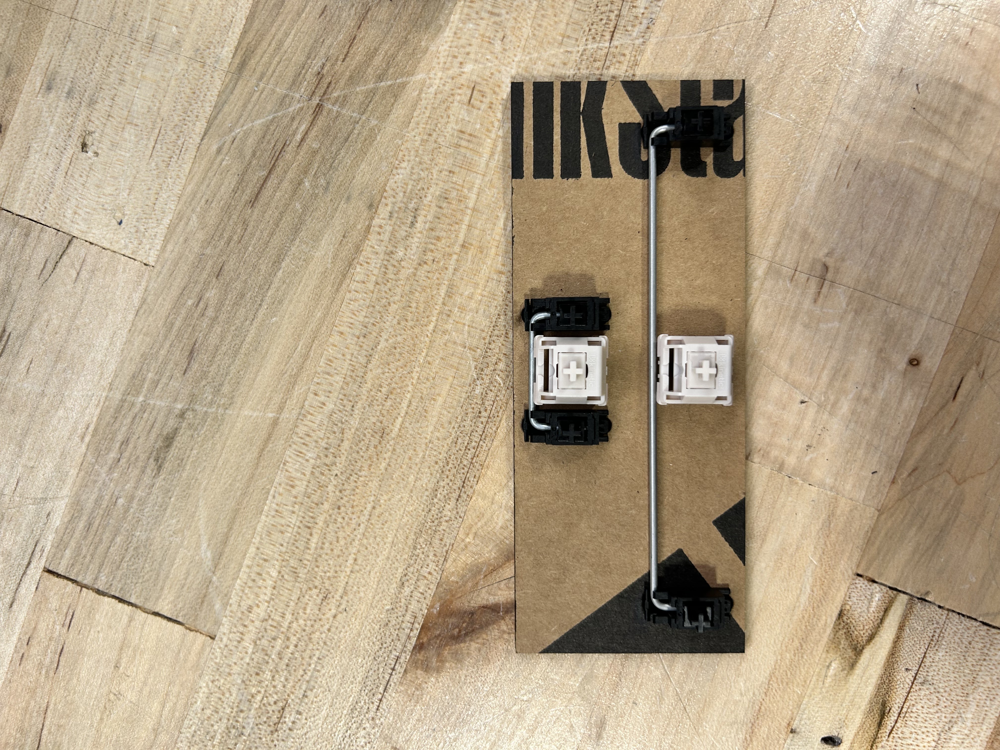
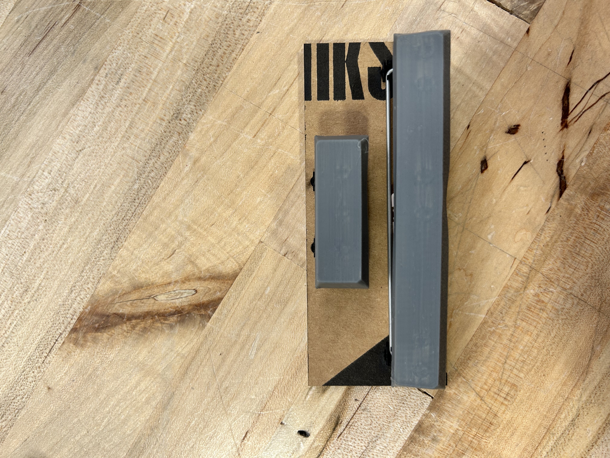
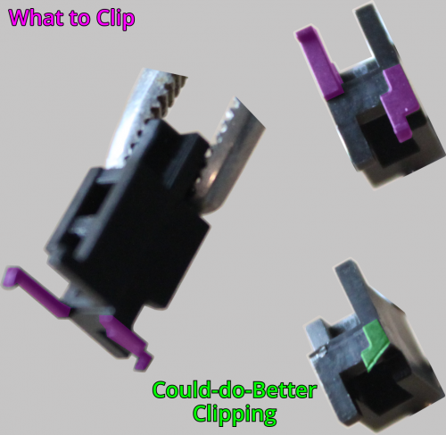
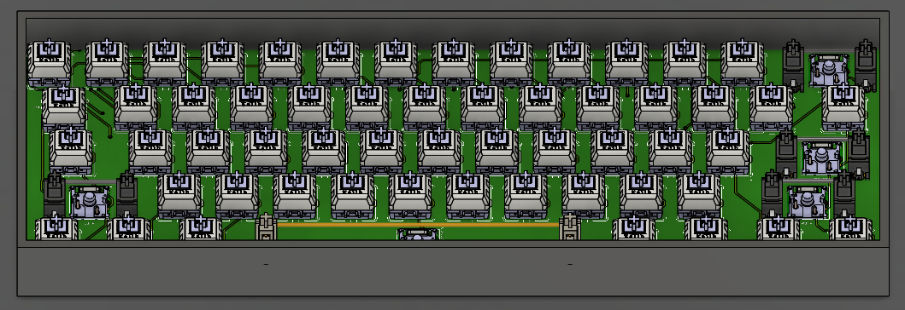
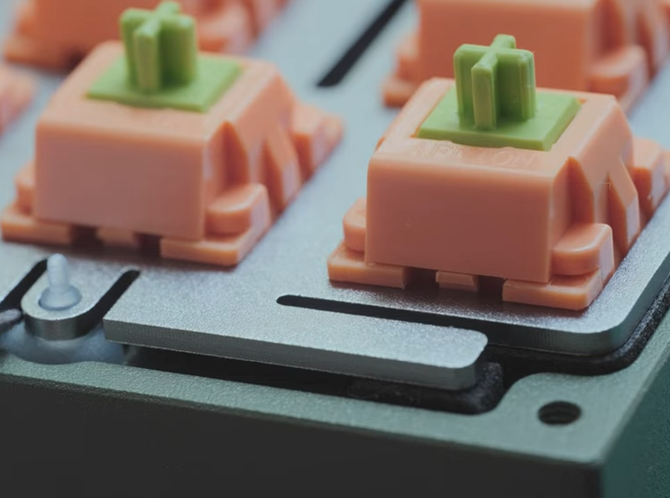

junior week dec. 18, 2025
was out on friday because i had flu (we can all thank benji for getting 2/3rd of the shop infected)
stabilizers
i finally recieved the stabilizers, and learned how to assemble the stabilizers. before doing so, i cut out the cardboard pcb hosting the footprints of the 2.0u and 6.25u keys.

after watching a few videos on how to assemble, the stabilizers, i got it done

first iteration
while watching the video on how to assemble the stabilizers, the video mentioned some simple mods you can do to make the stabilizers less wobbly. i decided to do this after testing the stabilizers


they snap in so nicely to the cardboard, it's actually so satisfying...
after that, i disassembeled all of the stabs to start modding
the first mod i did was cutting the two extra legs on the bottom of one of the parts, and sanding it down to be flat

i also decided to do another mod by cutting a few heat-shrinks to put on near the front to further reduce wobble.
case
so i started a case last week, but none of the very little progress i made saved, so i just restarted.
i edited most of the original dimensions due to the size of my pcb, and split the design into a top and bottom case.
furthermore, i added the 3d model of the stabilizers into my pcb for when i create the pcb plate to make it easier in the future

pcb with my current case progress.
as of now, the current pcb will just lay on the foam on the case which isn't ideal whatsoever. since the tofu 60 2.0 uses a screwless design, i decided to look at some build videos to see how they attach the pcb to the case.

it turns out that the tofu 60 2.0 uses these silicone bowls that fit in the case, and have a tiny tip that allow it to fit into the pcb holes. it is then held in place by the top plate pressing on it.
this creates a bouncy feel to the pcb that i would like to replicate, but am unsure if my current idea is feasable.
the idea
creating the holes in the pcb and the case for the silicone bowls wouldn't be a problem, but i was thinking of potentially printing out the silicone bowls out of tpu for that bouncy feel.
while i'm unsure if creating the silicone bowl will work (given my skills), i can always just buy them if it doesn't work.
foam
foam is important, but i thought we could use some random kind of foam. turns out, probably not due to how different foams work
probably gonna buy some eva foam, which is generally a cheap alternative to the expensive poron foam and has similar properties.

as of now, i need to work on the mounting mechanism for my pcb, and see if my idea is too farfetched for it to work.